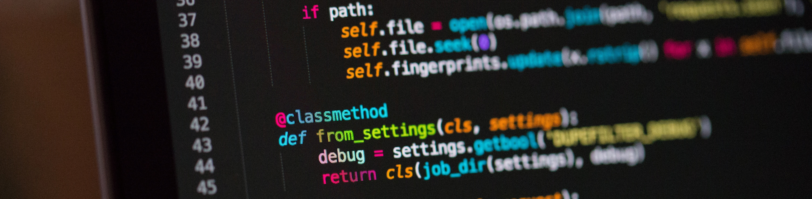

My Software projects

Discord bot Github
Discord bot made in python.
Brief description of the bot:
A general use discord bot designed to be used in every server. It has classic stuff like moderation and fun. I am constantly trying to implement new features. The goal for to the bot is to be a huge toolbox of different tools for everyone to use. Main features at the moment of creating this page are: R6 siege stats, weather report, covid19 stats, moderation commands, utility commands url shortener, radnom fact/pun/roast and many more. Im always working on adding new features.
Brief description of the bot:
A general use discord bot designed to be used in every server. It has classic stuff like moderation and fun. I am constantly trying to implement new features. The goal for to the bot is to be a huge toolbox of different tools for everyone to use. Main features at the moment of creating this page are: R6 siege stats, weather report, covid19 stats, moderation commands, utility commands url shortener, radnom fact/pun/roast and many more. Im always working on adding new features.
Technologies used:
- Python.
- Discord.py library.
- Json API requests.
Ionic website into an app Github
Using the ionic framework to convert an website into an app.
Brief description:
iOS app built using Ionic PWA framework. It work by creating an iFrame html tag that fits the screen with css. It was built as a weekend project for a radio starion.
Brief description:
iOS app built using Ionic PWA framework. It work by creating an iFrame html tag that fits the screen with css. It was built as a weekend project for a radio starion.
Technologies used:
- Html and css.
- Basics of Ionic framework.
- Basic use of XCode.
This Portfolio Github
Small portfolio as a showcase of my projects and skills.
Brief description:
A simple portfolio I made using a html/css template from HTML5UP. Thought I needed one to show the world what I have to offer skill wise. Had quite some fun while creating it and it helped me understand HTML more.
Brief description:
A simple portfolio I made using a html/css template from HTML5UP. Thought I needed one to show the world what I have to offer skill wise. Had quite some fun while creating it and it helped me understand HTML more.
Technologies used:
- Html and css.
- Use of a Html/css template (boilerplate).
- Online Unsplash pictures and fontawesome icons.
- Git and GitHub.